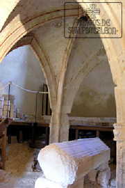

El resto de capiteles que sustentan los arcos torales y el arco que da acceso al ábside, presentan decoración vegetal y bolas con caperuza, así como la lucha feroz entre dos dragones que se disputan un mismo objeto que sujetan con fuerza entre sus garras.
-
Pero el capitel más importante para explicar todo el programa iconográfico de San Pantaleón, es el que representa el primer milagro en la vida del Santo. Un niño es picado por un reptil venenoso y como consecuencia de ello, muere; San Pantaleón, que había abandonado ya la religión pagana y convertido al cristianismo, invocando el nombre de Cristo, lo resucita. Este capitel se repite tres veces en la ermita, lo que demuestra la importancia del tema que representa.
En el siglo XVI, y ocupando lo que pudo ser la Casa del Priorazgo, que se destruyó en 1535 y que estaba pegada y comunicada con la Ermita, se fecha la ampliación gótica de la ermita que hoy conocemos. Se trata de una única nave, con bóvedas de crucería, en la que se encuentra un baldaquino gótico que encierra un sepulcro románico.
- 